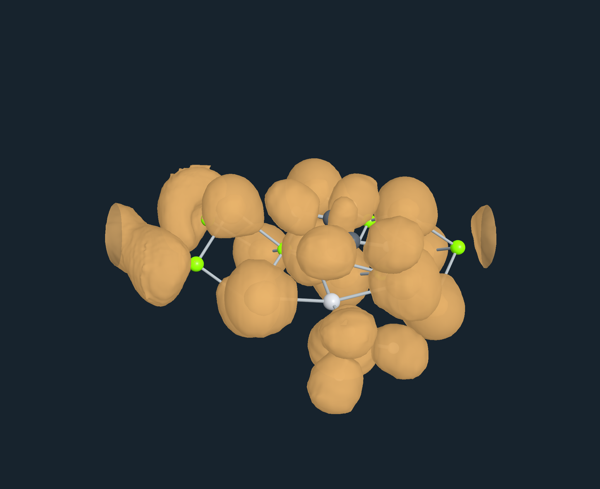

Get ready
Download signed-affine.cube. You need only EigenVista and this file. A cube already contains sampled scalar values, so no basis functions or orbital coefficients are needed.
This example is a mathematical rendering test, not a quantum-chemistry result. Its 2 hydrogen atoms are 1.4 bohr apart, producing 1 display bond. Its field has positive and negative lobes, but it is not a calculated hydrogen orbital or electron density.
What the example contains
The 7 × 7 × 7 grid has origin (−3.6, −3.3, −3) and step vectors (1, 0, 0), (0.2, 1, 0), and (0, 0.1, 1), in bohr. Those off-axis components make it skewed. At each grid position it stores:
f(x, y, z) = 0.8 (x + 0.25 y) exp[−0.7 (x² + 0.8 y² + 1.2 z²)]
The scalar is defined by that formula; it has no inferred physical units. The example’s source notes distinguish it from the calculated Molden sample.
1. Open and preview the grid
Click Open and choose
signed-affine.cube. Check 2 atoms and 1 bond in Molecular data. The field appears under Quantum fields → Sampled fields.Wait for the initial Volume preview. It uses the imported field without generating meshes. Choose Sampled raycast preview under Field rendering → Mode to see an isovalue boundary instead.
Use the initial positive Isovalue of 0.08 to start. Rotate and use Fit scene to inspect the two signs. Then change the isovalue magnitude: a lower level usually encloses more of a localized lobe; a level outside the sampled range produces no surface.
Try Sampling quality → Fine, then return to Standard. This adjusts ray sampling, not the original 343 scalar samples.

Checkpoint: you can see the field before any entry exists under Saved surfaces. The atom positions and display bond come from geometry, independently of the scalar values.
2. Make and compare meshes
Return to an Isovalue of 0.08, or use a positive magnitude that shows both signed lobes. Set Grid resolution to 40³. The control bounds sampling; this small 7³ source is not upsampled to 40³.
Click Generate surfaces and wait for successful completion. Inspect the positive and negative entries under Saved surfaces, then choose Isosurface mesh if needed.
Switch between Isosurface mesh and Sampled raycast preview. In mesh mode, use the eye controls to show or hide individual saved meshes. In sampled mode, the selected field’s sampled display replaces its meshes visually.
Change the isovalue in raycast mode and observe the preview. Switch back to mesh mode: the saved geometry still reflects its generation isovalue. Generate again only when you want to replace it.
Checkpoint: raycast changes are immediate display changes, while saved meshes change only after explicit generation. A finer display setting cannot recover detail that the original coarse cube never sampled.
3. Save the original field with the meshes
Save a new file such as
signed-field.eigenvista, then reopen it using Open.Confirm that the atoms, bond, sampled field, and saved meshes remain available. Cached meshes open in mesh mode without regeneration.
Choose Volume preview or Sampled raycast preview again. The app prepares a display grid from the stored original scalar field.
Save retains the original f64 scalar values and affine grid geometry alongside generated meshes. Display sampling and current meshing use f32; they do not replace the original field in the document. Camera, active render mode, display resolution, and transient display samples are session state.
If something differs
If no field is visible, try Fit scene, check the isovalue, and read any preview error. An all-zero grid cannot produce a nonzero isosurface. An unsupported multi-field or alternative-unit cube must be exported as one field in the supported bohr profile; renaming the file does not convert it.
Sampled raycasting can miss tangencies or crossings, volume intersections are approximate, and marching cubes is not topology-certified. See the field reference and file reference before using your own cube data. For a large atomic model, continue with 1AON and ambient occlusion.